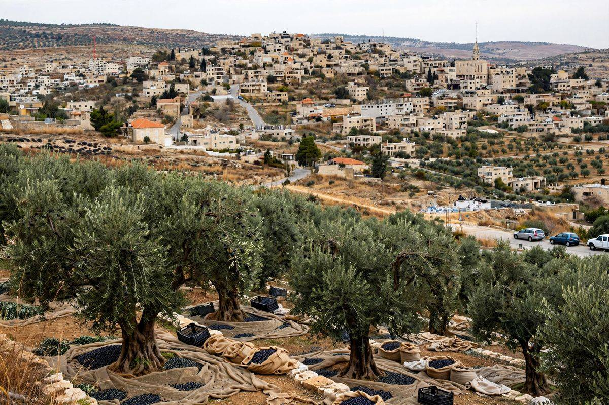

Des colons attaquent des diplomates européens près de Taybeh, en Cisjordanie
La police a ouvert une enquête après l'attaque de diplomates de France, de Belgique et de Pologne pendant une visite liée à la récolte des olives près de Taybeh, un jour après que des colons ont battu une photographe du Washington Post dans la même zone. Une voiture du consulat belge a été endommagée et un maire français qui voyageait avec le groupe a été battu.

Points clés
- Mis à jour à 05:43 UTC, le 19 oct.
- Mise à jour à 19 h 57 UTC, le 18 octobre 2026.
- Mise à jour à 20:09 UTC, le 17 octobre 2026.
Mis à jour à 05:43 UTC, le 19 oct. 2026. La police israélienne a dit lundi avoir arrêté 10 suspects dans une enquête sur les incidents violents du week-end en Cisjordanie, dont les attaques contre une photojournaliste américaine et contre des diplomates européens, selon Reuters. Le bilan est passé des huit arrestations annoncées au départ à 10. La police n'a pas identifié les suspects. Cela remplace la situation décrite dans la mise à jour ci-dessous, qui indiquait dimanche qu'aucune arrestation n'avait été annoncée.
Mise à jour à 19 h 57 UTC, le 18 octobre 2026. L'Union européenne a condamné l'attaque dimanche. Un porte-parole du bloc a dit qu'il condamne fermement les attaques de colons violents en Cisjordanie, y compris contre des diplomates européens, et qu'il attend une pleine responsabilité ainsi que des mesures efficaces pour empêcher la poursuite des violences et du harcèlement contre les Palestiniens pendant la récolte des olives et contre les journalistes, a rapporté Reuters. Des diplomates des États-Unis se sont rendus à Taybeh dimanche, a rapporté Reuters. Riley Barnes, secrétaire d'État adjoint chargé de la démocratie, des droits humains et du travail, et Brian Burch, ambassadeur des États-Unis près le Saint-Siège, ont visité l'église du couvent latin et devaient rencontrer des membres de la communauté chrétienne. D'anciens ambassadeurs israéliens et des employés du ministère des Affaires étrangères ont manifesté dimanche devant le ministère à Jérusalem contre la violence des colons, a rapporté l'Agence France-Presse. Dimanche, aucune arrestation n'avait été annoncée dans l'attaque de Taybeh ni dans le passage à tabac de la photographe du Washington Post Heidi Levine la veille, a rapporté Reuters. Des journalistes de Reuters ont aussi vu dimanche au moins 10 colons masqués lancer des pierres sur des Palestiniens et des militants qui récoltaient des olives près de Salfit, obligeant les agriculteurs à fuir pendant que la police des frontières tirait des gaz lacrymogènes vers les collines.
Mise à jour à 20:09 UTC, le 17 octobre 2026. La France et la Pologne se sont jointes samedi à la Belgique pour condamner l'attaque. Le ministère polonais des affaires étrangères s'est dit profondément indigné, a condamné l'attaque dans les termes les plus fermes, et a dit attendre des autorités israéliennes des explications urgentes et détaillées, l'identification des responsables et la garantie qu'ils rendront des comptes. Les attaques contre les membres du corps diplomatique sont absolument inacceptables, a dit le ministère. Le ministre français des affaires étrangères, Jean-Noël Barrot, a qualifié l'attaque de scandaleuse et a demandé au gouvernement israélien d'arrêter immédiatement les responsables. Le ministre belge des affaires étrangères, Maxime Prevot, a dit, dans des propos plus complets rapportés par CNN, qu'en tant que puissance occupante les autorités israéliennes doivent protéger les Palestiniens, assurer la sécurité des diplomates et des journalistes et traduire les responsables en justice, ajoutant que l'impunité des colons violents doit cesser. CNN a rapporté que le président israélien, Isaac Herzog, a qualifié l'attaque de violence scandaleuse et choquante. Le bureau du premier ministre Benjamin Netanyahu a répondu dans un communiqué sur X que des accusations graves exigent des preuves graves, et l'AAP a rapporté que le bureau a mis en garde contre des conclusions prématurées. Le ministre israélien des affaires étrangères, Gideon Sa'ar, a appelé les attaquants des émeutiers israéliens, selon CNN et l'AAP.
Mise à jour à 18:10 UTC, le 17 octobre 2026. Le ministre belge des affaires étrangères, Maxime Prevot, a condamné l'attaque dans les termes les plus fermes et a dit que la Belgique continuerait à faire pression pour des sanctions contre les responsables des violences de colons et contre ceux qui les soutiennent, selon Reuters. Prevot a dit que le consul général de Belgique, des diplomates français et polonais, des représentants catholiques et un maire français figuraient parmi les personnes attaquées, et qu'un véhicule belge avait été endommagé. « Récolter des olives, couvrir l'actualité ou exercer des fonctions diplomatiques ne devrait jamais exposer qui que ce soit à une attaque », a-t-il dit. CNN a rapporté que le ministre israélien des affaires étrangères, Gideon Sa'ar, a lui aussi fermement condamné ce qu'il a appelé de graves actes de violence commis par des émeutiers israéliens, et a dit que son ministère était en contact avec les ambassadeurs des pays concernés et aidait les forces de l'ordre. Hussein al-Sheikh, vice-président de l'Autorité palestinienne, a demandé une position internationale ferme et une protection internationale pour les Palestiniens. La radio de l'armée, citée dans d'autres récits, a dit que sept colons masqués armés de matraques étaient arrivés en véhicules tout-terrain, avaient entouré le convoi et exigé des papiers d'identité.
La police israélienne a déclaré samedi avoir ouvert une enquête après l'attaque d'une délégation de diplomates européens près du village palestinien de Taybeh, en Cisjordanie occupée, au deuxième jour de violences de colons autour de la récolte des olives touchant des visiteurs étrangers.
Les diplomates venaient de France, de Belgique et de Pologne, selon la radio publique israélienne Kan. Ils visitaient un pressoir à olives près de Taybeh, un village chrétien proche de Ramallah, quand des colons ont bloqué leur véhicule, exigé des papiers d'identité et endommagé une voiture du consulat belge, selon Ynet. D'autres récits disent que des hommes masqués ont entouré les voitures, jeté des pierres et brisé une vitre du véhicule belge.
Deux diplomates et un témoin ont dit à l'AFP que le convoi avait été attaqué pendant son trajet dans la zone, et que l'attaque avait été filmée. Un maire français qui voyageait avec la délégation, Bernard Baudoux, 78 ans, d'Aulnoye-Aymeries, a été battu et on le voit tomber au sol sur les images. Des témoins diplomatiques ont dit à l'AFP que ses blessures ne mettaient pas sa vie en danger. Le maire de Taybeh, Suleiman Khourieh, a dit à Al Jazeera que le consul de France faisait partie de la délégation. Des récolteurs d'olives palestiniens ont aussi été attaqués dans le même incident, selon des médias israéliens.
Ce que les autorités israéliennes ont dit
La police a dit que des images de l'attaque circulaient en ligne et que des agents avaient ouvert une enquête pour agression. « La police d'Israël condamne la violence sous toutes ses formes et travaillera pour mener ces enquêtes à leur terme jusqu'à ce que tous ceux qui ont participé à ces affaires soient traduits en justice », dit le communiqué de la police. La police a ajouté avoir contacté le ministère israélien des affaires étrangères pour aider à retrouver les personnes attaquées.
L'armée israélienne a condamné l'attaque. Elle a dit que la visite diplomatique ne lui avait pas été coordonnée à l'avance, qu'aucun soldat n'était sur place, et que l'incident avait été signalé au commandement de la division. Les trois gouvernements européens ont commenté plus tard samedi, dans les déclarations en tête de ce reportage.
Une récolte sous attaque
L'attaque est survenue un jour après que des colons ont battu la photographe du Washington Post Heidi Levine près du village d'Abu Falah, à quelques kilomètres, pendant les attaques du vendredi contre la récolte des olives. Levine a reçu des coups de pied pendant une dizaine de minutes, a-t-elle dit, et a dû être opérée d'un doigt presque arraché. Elle souffre aussi d'une côte cassée, de vertèbres cassées et de coupures. Plusieurs Palestiniens ont été blessés dans la même série d'attaques.
La violence des colons contre les Palestiniens a augmenté pendant la récolte des olives de cette année, et Taybeh a été une cible répétée. Le curé du village a rapporté au début du mois que des colons étaient entrés le 7 octobre dans des oliveraies à l'est de Taybeh et avaient cueilli des olives sur des arbres appartenant à des familles palestiniennes, en cassant des branches au passage.
L'attaque de samedi fait monter les enjeux. Les violences précédentes ont touché des agriculteurs et des journalistes. Cette fois, les personnes dans les voitures détenaient des passeports diplomatiques de trois États européens, et l'enquête est maintenant entre les mains de la police et du ministère des affaires étrangères à Jérusalem.
Chronologie
- Oct 7, 2026Des colons sont entrés dans des oliveraies à l'est de Taybeh et ont cueilli des olives sur des arbres appartenant à des familles palestiniennes, selon le curé du village.
- Oct 16, 2026Des colons ont battu la photographe du Washington Post Heidi Levine et blessé plusieurs Palestiniens pendant des attaques contre la récolte des olives près d'Abu Falah.
- Oct 17, 2026Une délégation de diplomates de France, de Belgique et de Pologne a été attaquée près de Taybeh. La police a ouvert une enquête et l'armée a dit que la visite ne lui avait pas été coordonnée.
- Oct 18, 2026L'Union européenne a condamné l'attaque de Taybeh et exigé une pleine responsabilité. Des diplomates des États-Unis se sont rendus à Taybeh, d'anciens diplomates israéliens ont manifesté devant le ministère des Affaires étrangères à Jérusalem, et aucune arrestation n'avait été annoncée.
- Oct 19, 2026La police israélienne dit avoir arrêté 10 suspects pour les attaques du week-end en Cisjordanie contre une photojournaliste américaine et contre des diplomates européens, contre huit au départ. Les suspects n'ont pas été identifiés.
Sources
- Associated Press: Diplomats attacked in the occupied West Bank, and other Middle East developments
- AFP via Sweden Herald: Israeli settlers attack diplomatic convoy in West Bank, French mayor beaten
- France 24: Settlers attack a diplomatic convoy in the West Bank and assault a French mayor
- Ynet, Walla and Jerusalem Post via News in Israel: Masked settlers attack European diplomats and Palestinians in West Bank
- Times of Israel via Project Push: European diplomats reportedly attacked by settlers during olive harvest visit in West Bank
- Reuters: West Bank settlers attack Palestinians, Western diplomats, Belgium says
- CNN: Israeli settlers attack group of European diplomats in the occupied West Bank
- AAP with AP: Israeli settlers attack diplomats in West Bank, reports
- Reuters: EU condemns attacks by violent settlers including on diplomats, spokesperson says
- Reuters: US officials visit Palestinian village after settler attacks on diplomats
- Al Jazeera and AFP: EU condemns Israeli settler attack on diplomats in occupied West Bank
- Reuters via DevDiscourse: Israel police arrest suspects over settler attacks on US journalist, European diplomats